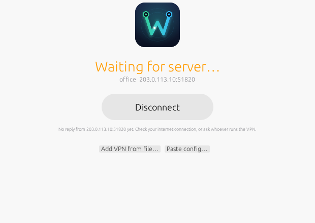

Simple on the outside
Everything technical stays out of the way until you ask for it.
One button
Connect and Disconnect. Wirest tells you in plain words when you're connected, and when the server isn't answering.
Lives in your menu bar
Connect from the menu bar like Tailscale. Closing the window keeps Wirest running.
Password once
The first connect asks for your Mac password to install a small helper. After that, no more prompts.
Add a VPN in seconds
Drag in the .conf file from your VPN provider, pick it from Finder, or paste the text.
Everything included
WireGuard tools and BoringTun (Cloudflare's WireGuard in Rust) are built in. Nothing else to install.
Advanced when you need it
Switch on Advanced for every detail: keys, peers, live traffic, an editor with validation, and logs.
Install
About a minute, once.
- Download WirestGet Wirest-macOS-arm64.dmg and open it.
- Drag Wirest into ApplicationsThen open it from your Applications folder.
- Allow it the first timemacOS will say it can't verify the developer. Click Done, then open System Settings → Privacy & Security, scroll down and click Open Anyway next to Wirest. You only do this once.
Why the warning? Wirest isn't notarized by Apple yet (that needs a paid Apple developer account). The app is built from the public source code on GitHub. If you prefer the terminal, this does the same as Open Anyway:
xattr -dr com.apple.quarantine /Applications/Wirest.appHow to use
You need a WireGuard config from whoever runs your VPN — a VPN provider, your company, or your own server. It's a small text file ending in .conf.
- Add your VPNDrop the
.conffile onto the Wirest window, or click Import file… or Paste config…. - Click ConnectThe first time, enter your Mac password so Wirest can install its helper.
- That's itNext time, just click Connect — in the window or in the menu bar.

Linux servers & the terminal
wirest-tui is the same one-click idea in a terminal — for headless Linux servers over SSH, and the Mac terminal.
┌ Wirest ──────────────────────── root ┐
│● Connected to office │
│1.2 MiB received · 300 KiB sent │
└──────────────────────────────────────┘
┌ VPNs ────────┐┌ office ──────────────┐
│ ○ home ││Status Connected │
│▶ ● office ││Address 10.0.0.2 │
│ ! draft ││Endpoint vpn:51820 │
└──────────────┘└──────────────────────┘
enter disconnect a add p paste q quit- Download and installOn the server (use
aarch64for ARM):curl -fLO https://github.com/havban/wirest/releases/latest/download/wirest-tui-linux-x86_64.tar.gz tar xzf wirest-tui-linux-x86_64.tar.gz sudo ./wirest-tui-linux-x86_64/install.sh - Add your VPN
wirest-tui add office.conf, or press a / p in the UI. - ConnectRun
wirest-tuiand press Enter — orwirest-tui connect officein scripts.
Any distro, nothing to install
Static binaries with WireGuard's tools, bash and BoringTun built in. Needs only iproute2 (and resolvconf for configs with DNS).
Kernel or userspace
Uses the kernel's WireGuard when it's there; otherwise BoringTun, so it also works in containers and LXC/OpenVZ VPSes.
Won't lock you out
Over SSH, Wirest asks before connecting a VPN that sends all traffic through the tunnel, which would cut off your session.
Run it as root (sudo wirest-tui) to control WireGuard directly. As a normal user it installs a small helper once — a systemd service on Linux — and sudo asks for your password that one time. Downloads: Linux x86_64 · Linux arm64 · macOS terminal.
How it works
For the curious, and for anyone deciding whether to trust it.
The helper
Changing network settings needs administrator rights. Like Tailscale, Wirest installs a small background helper once (with your password). The app then asks the helper to connect or disconnect.
Locked down
The helper only accepts WireGuard configs and refuses ones that contain scripts (PostUp and friends), so it can't be used to run commands. It uses its own protected copy of the tools.
Your keys stay yours
Configs are stored only on your Mac, readable only by you. Wirest has no account, no server and no tracking.
Questions
It says “Waiting for server…”
Wirest has set up the tunnel, but the VPN server hasn't answered yet. Check your internet connection. If it stays that way, the server may be down or your config may be out of date — ask whoever runs the VPN.
My config doesn't show up on the main screen
Wirest only shows configs that are complete. Switch on Advanced (top right) to see every config and what's missing. Configs with PostUp/PreUp scripts aren't supported; remove those lines in Advanced → Edit.
Can I connect to two VPNs at once?
No — like most VPN apps, Wirest keeps one connection at a time. Connecting to another VPN switches over.
How do I quit Wirest?
Closing the window keeps Wirest in the menu bar. Choose Quit Wirest from the menu-bar icon, or press ⌘Q. Your VPN stays connected until you disconnect.
How do I uninstall it?
Switch on Advanced and click Remove helper…, then drag Wirest from Applications to the Trash. Your configs are in ~/Library/Application Support/Wirest if you want to remove those too.
Does it work on Intel Macs, or on Linux desktops?
The Mac app is for Apple Silicon (you can build it yourself on any Mac). On Linux, use the terminal version, which runs on any distro, x86_64 or arm64.
Build it from source
You need Xcode Command Line Tools. Everything else is installed automatically:
git clone https://github.com/havban/wirest
cd wirest
./run.sh